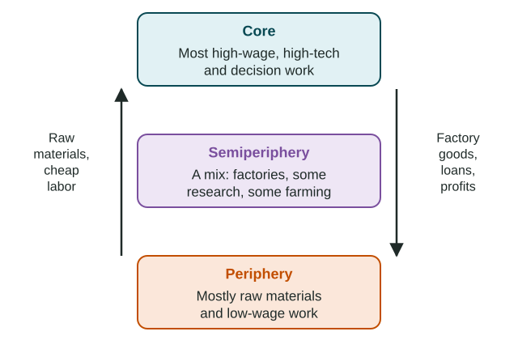

In 1960, South Korea was one of the poorer countries in Asia, and much of its economy was farming. By the 2000s it was home to some of the world's largest makers of ships, cars and electronics. In the same decades, many countries that exported copper, oil or cocoa saw their incomes rise and fall with world prices. Why do some places grow and others struggle? Geographers use three theories the exam names: Rostow's stages of economic growth, world system theory and dependency theory. Each is a model: a simplified picture of how development works, built on assumptions, with limits you must know.
Rostow's stages of economic growth

In 1960 the American economist W. W. Rostow published Rostow's stages of economic growth, a model that says every country can develop by passing through the same five stages:
- Traditional society. Most people farm for their own needs; technology changes slowly.
- Preconditions for take-off. New technology, roads and banks appear; a few industries and new leaders push for growth.
- Take-off. A few industries, often for export, grow fast; investment rises and growth becomes self-sustaining.
- Drive to maturity. Growth spreads to many industries; technology improves; the economy diversifies.
- Age of high mass consumption. Most people can buy cars, appliances and services; the service sector dominates.
Assumptions. The model assumes that all countries follow one path, the one Britain and the United States took; that investment, trade and free markets drive growth; and that a country's own choices decide its progress.
Limits. Rostow drew his stages from the history of a few Western countries. The model leaves out colonial history and the way richer countries shape poorer ones' choices. It treats mass consumption as the goal for everyone, which ignores environmental limits and other ideas of a good life. And it cannot explain why some countries stay in one stage for decades. South Korea's growth from the 1960s, led by exports, is often described with the take-off idea, but it also depended on strong government planning and outside aid that the model does not stress.
Do not mix this model up with the demographic transition model from Unit 2. Both have stages, but Rostow's stages describe the economy, while the demographic transition model describes birth and death rates.
World system theory

In the 1970s the American sociologist Immanuel Wallerstein proposed world system theory. It says that since about the 1500s the world has formed one connected economy, and countries can only be understood by their role in it. You met its three tiers in Topic 7.2: the core (high-wage, high-tech and decision work), the semiperiphery (a mix of industry and lower-wage work) and the periphery (raw materials and low-wage work). The core gains from the periphery's cheap raw materials and labor; the semiperiphery both gains from the periphery and is used by the core.
Strengths. Unlike Rostow, it looks at the whole world at once and explains why one place's development is linked to another's. It also allows movement: South Korea is often described as having moved from the periphery toward the core.
Limits. The tiers are hard to measure, and writers disagree on where to put many countries, so a list of core or periphery countries is a judgment, not a fact. The model says less about choices made inside a country, such as education policy. And it works at more than one scale: inside China, the coastal cities around Shanghai and Shenzhen look like a core, and many interior provinces look like a periphery.
Dependency theory
Dependency theory grew from the work of Latin American economists in the 1950s and 1960s, such as Raúl Prebisch at the United Nations Economic Commission for Latin America. It says that poverty in the periphery is not a stage to grow out of but a result of the periphery's dependence on the core. Colonial rule built economies that exported raw materials and imported factory goods. Over time, the theory argues, the prices of raw materials tend to fall compared with the prices of factory goods, so the periphery must sell more and more to buy the same imports, and profits flow to the core.
Limits. Several East Asian economies, such as South Korea and Singapore, grew rich by trading more with the core, not less, which the theory did not predict. The policies it inspired, such as making goods at home behind high import taxes, worked in some places and stalled in others.
Commodity dependence
You met commodity dependence in Unit 5: relying on one or a few raw exports, such as a crop, a metal or oil. Zambia's exports have long been mostly copper; Côte d'Ivoire has long been the world's largest grower of cocoa beans; Nigeria's export earnings come mostly from oil. When the world price of the commodity falls, export earnings, jobs and government budgets fall with it. In the mid-1970s, for example, a sharp fall in copper prices cut Zambia's earnings, and its government borrowed heavily. Commodity dependence links all three theories: Rostow's model would see a country that has not yet reached take-off; world system and dependency theory see it as the periphery's role in a system that favors the core.
Comparing the three theories
| Rostow's stages | World system theory | Dependency theory | |
|---|---|---|---|
| Scale it looks at | One country at a time | The whole world as one system | Links between the periphery and the core |
| Why some places are poor | They have not yet climbed the stages | Their role in the world economy | Dependence built by colonial history and trade |
| Can a country rise? | Yes, by investing and trading | Yes, countries can move between tiers | Hard, unless ties to the core change |
| One limit | Assumes one Western path | Tiers are hard to measure | Did not predict East Asia's export-led growth |
Worked example: never call a stage a fact. Weak: "Country X is in stage 3." Strong: "Country X's fast growth of export factories since 2000 is consistent with Rostow's take-off stage, but the model leaves out the foreign firms that own many of those factories, which dependency theory would stress."